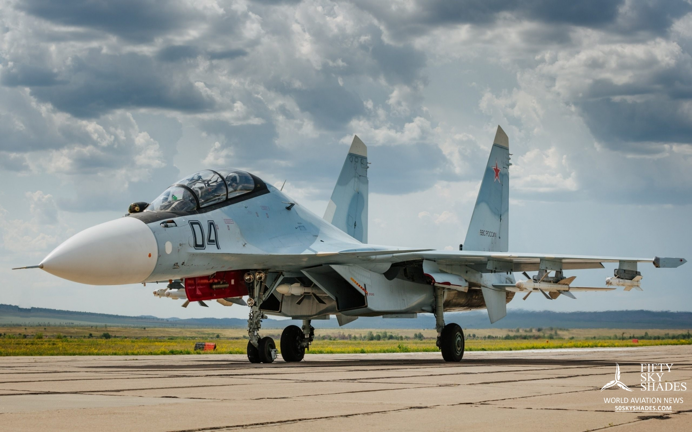
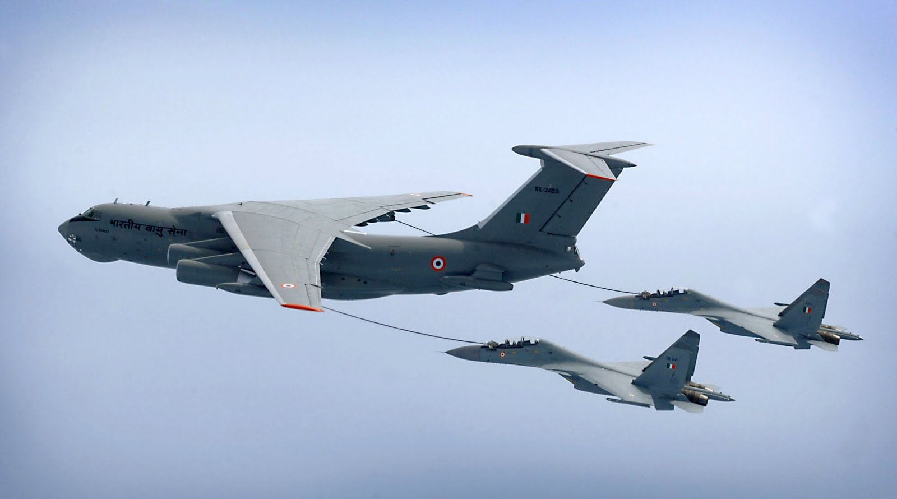

Sukhoi-30MKI
.jpg)
The Sukhoi Su-30MKI (NATO reporting name: Flanker-H) is a twinjet multirole air superiority fighter developed by Russia's Sukhoi and built under licence by India's Hindustan Aeronautics Limited (HAL) for theIndian Air Force (IAF). A variant of the Sukhoi Su-30, it is a heavy, all-weather, long-range fighter
BASIC INFO
Role: Multirole Air superiority fighter
Nation of origin: Russia / India
Design group: Sukhoi Design Bureau
Built by: Hindustan Aeronautics Limited(under licence)
First flight: IAF Su-30MK: 1 July 1997
and Su-30MKI: 2000
Introduction: 27 September 2002
Status: In service
Primary user: Indian Air Force
Period produced: 2000-present
Number built: 200 as of August 2014
Unit cost: Rupees. 358 crore (US$53 million) in 2014
Developed from: Sukhoi Su-30
Variants: Sukhoi Su-30MKM
The aircraft is tailor-made for Indian specifications and integrates Indian systems and avionics as well as French and Israeli sub-systems
DEVELOPMENT
Origins:
-- The Su-30MKI was designed by Russia's Sukhoi Corporation beginning in 1995 and built under licence by India's Hindustan Aeronautics Limited (HAL). The Su-30MKI is derived from the Sukhoi Su-27 and has a fusion of technology from the Su-37 demonstrator and Su-30 program, being more advanced than the Su-30MK and the Chinese Su-30MKK/MK2.
-- After two years of evaluation and negotiations, on 30 November 1996, India signed a US$1.462 billion deal with Sukhoi for 50 Russian-produced Su-30MKIs in five batches.
Upgrades:
-- In 2004, India inked a deal with Russia to domestically produce the Novator K-100 missile, designed to shoot down airborne early warning and control (AEWC) and C4ISTAR aircraft, for the Su-30MKI. Although not initially designed to carry nuclear or strategic weapons, in 2011, there were plans to integrate the nuclear-capable Nirbhay missile as well.
-- On 25 June 2016, HAL conducted the first test flight of a Su-30MKI fitted with a BrahMos-A missile from Nashik, India. The first air launch of BrahMos from a Su-30MKI is to take place in October 2016
-- India is planning to upgrade its Su-30MKI fighters with Russian Phazotron Zhuk-AE Active electronically scanned array (AESA) radars. The X band radar can track 30 aerial targets in the track-while-scan mode and engage six targets simultaneously in attack mode
DESIGN
Characteristics:
-- The Su-30MKI is a highly integrated twin-finned aircraft. The airframe is constructed of titanium and high-strength aluminium alloys. The engine intake ramps and nacelles are fitted with trouser fairings to provide a continuous streamlined profile between the nacelles and the tail beams
-- The fins and horizontal tail consoles are attached to tail beams. The central beam section between the engine nacelles consists of the equipment compartment, fuel tank and the brake parachute container. The fuselage head is of semi-monocoque construction and includes the cockpit, radar compartments and the avionics bay
-- Su-30MKI aerodynamic configuration is a longitudinal triplane with relaxed stability. The canard increases the aircraft lift ability and deflects automatically to allow high angle of attack (AoA) flights allowing it to perform Pugachev's Cobra
-- The integral aerodynamic configuration combined with thrust vectoring results in extremely capable manoeuvrability, taking off and landing characteristics. This high agility allows rapid deployment of weapons in any direction as desired by the crew. The canard notably assists in controlling the aircraft at large angles-of-attack and bringing it to a level flight condition
-- The aircraft has a fly-by-wire (FBW) with quadruple redundancy. Dependent on flight conditions, signals from the control stick position transmitter or the FCS may be coupled to remote control amplifiers and combined with feedback signals from acceleration sensors and rate gyros. The resultant control signals are coupled to the high-speed electro-hydraulic actuators of the elevators, rudders and the canard. The output signals are compared and, if the difference is significant, the faulty channel is disconnected. FBW is based on a stall warning and barrier mechanism which prevents stalls through dramatic increases of control stick pressure, allowing a pilot to effectively control the aircraft without exceeding the angle of attack and acceleration limitations. Although the maximum angle of attack is limited by the canards, the FBW acts as an additional safety mechanism.
-- The Su-30MKI has a range of 3,000 km with internal fuel which ensures a 3.75 hour combat mission. Also, it has an in-flight refueling (IFR) probe that retracts beside the cockpit during normal operation. The air refueling system increases the flight duration up to 10 hours with a range of 8,000 km at a cruise height of 11 to 13 km. Su-30MKIs can also use the Cobham 754 buddy refueling pods
--The Su-30MKI's radar cross-section (RCS) is reportedly about 20 square metres
Cockpit:
-- The displays include a customised version of the Israeli Elbit Su 967 head-up display (HUD) consisting of bi-cubic phase conjugated holographic displays and seven multifunction liquid-crystal displays, six 127 mm x 127 mm and one 152 mm x 152 mm
-- Flight information is displayed on four LCD displays which include one for piloting and navigation, a tactical situation indicator, and two for display systems information including operating modes and overall status. Variants of this HUD have also been chosen for the IAF's Mikoyan MiG-27 and SEPECAT Jaguar upgrades for standardisation
-- The rear cockpit has a larger monochrome display for air-to-surface missile guidance. The Su-30MKI on-board health and usage monitoring system (HUMS) monitors almost every aircraft system and sub-system, and can also act as an engineering data recorder. From 2010, indigenously designed and built HUDs and Multi-Function Displays (MFD) were produced by the Delhi-based Samtel Group Display Systems
Propulsion:
-- The Su-30MKI is powered by two Al-31FP turbofans, each rated at 12,500 kgf (27,550 lbf) of full after-burning thrust, which enable speeds of up to mach two in horizontal flight (about 2450 km/h at ground-level) and a rate of climb of 230 m/s
-- The mean time between overhaul is reportedly 1,000 hours with a full-life span of 3,000 hours; the titanium nozzle has a mean time between overhaul of 500 hours
-- The Su-30MKI's Al-31FP powerplant built on the earlier Al-37FU, adding two-plane thrust vectoring nozzles are mounted 32 degrees outward to longitudinal engine axis (i.e. in the horizontal plane) and can be deflected +-15 degrees in one plane. The canting allows the aircraft to produce both roll and yaw by vectoring each engine nozzle differently; this allows the aircraft to create thrust vectoring moments about all three rotational axes, pitch, yaw and roll
OPERATORS
Bareilly AFS: 15 Wing's No. 8 Squadron IAF Eight Pursoots (since mid-2007) and No. 24 Squadron IAF Hunting Hawks sqns with Su-30MKI (since late 2003, and since early 2009 four of its Su-30MKIs have been tasked with strategic reconnaissance along the Sino-Indian LAC with EL/M-2060P SAR pod)
Bhatinda AFS: 34 Wing - No. 17 Squadron IAF Golden Arrows with Su-30MKI (since June 2012)
Chabua AFS: 14 Wing - No. 102 Squadron IAF Trisonics with Su-30MKI (since 8 March 2011)
Halwara AFS: 34 Wing - No. 220 Squadron IAF Desert Tigers with Su-30MKI (since 25 September 2012)
Jodhpur AFS: 32 Wing - No. 31 Squadron IAF Lions with Su-30MKI (since 1 October 2011)
Lohegaon AFS: 2 Wing - No. 20 Squadron IAF Lightning (since 27 September 2002) and 30 SQN Rhinos with Su-30MKI (since 21 March 2005)
Bhuj AFS: 27 Wing - No. 15 Squadron IAF Flying Lancers
Tezpur AFS: 11 Wing - No. 2 Squadron IAFWinged Arrows with Su-30MKI (since 15 June 2009)
Maharajpur AFS: 40 Wing - TACDE with Su-30MKI (since October 2010)
Sulur AFS to get Su-30MKI aircraft in 2016
Thanjavur AFS to host a squadron of 16-18 Su-30MKIs beginning in 2017
Kalaikunda AFS: New squadron to be raised to further strengthen the eastern sector

A Russian Model during a test flight

2 Su-30MKI's in an air-to-air refuel op with an IAF Il-78 Tanker